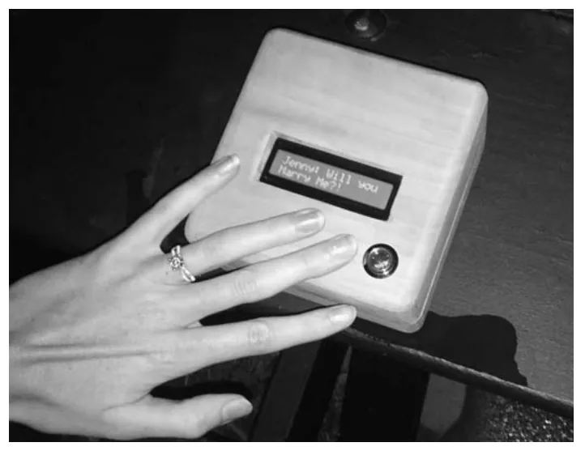
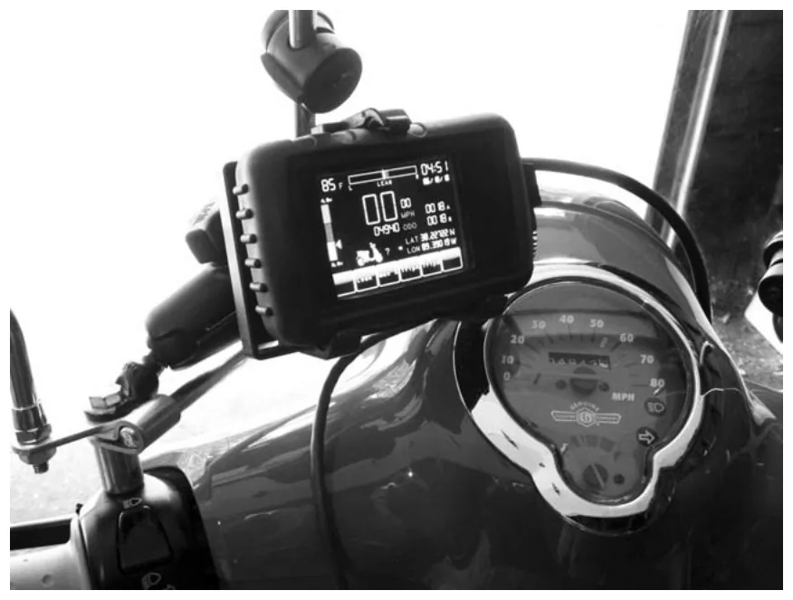
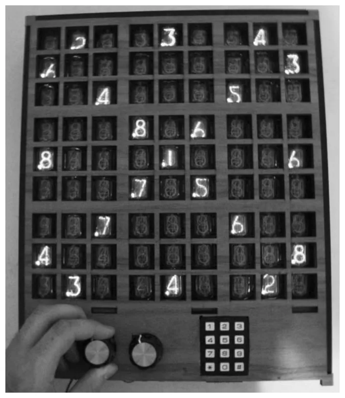
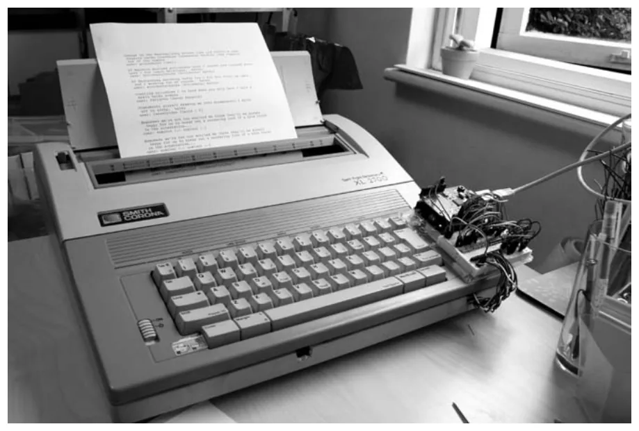

A quick scan through this book will show you that you can use the Arduino to do something as simple as blinking a small light, or even something more complicated, such as interacting with a cellular phone—and many different things in between.
For example, have a look at Philip Lindsay’s device, shown in Figure 1-2. It can receive text messages from cellular phones and display them on a large sign for use in dance halls. This device uses an Arduino board and a cellular phone shield to receive text messages from other phones (similar to Project 65). The text message is sent to a pair of large, inexpensive dot-matrix displays for everyone to see.
You can purchase large display boards that are easy to interface with an Arduino, so you don’t have to make your own display from scratch. (For more information, visit http://www.labradoc.com/i/follower/ p/project-sms-text-scroller.)
How about creating a unique marriage proposal? Tyler Cooper wanted an original way to propose to his girlfriend, so he built what he calls a “reverse geocache box”—a small box that contained an engagement ring, as shown in Figure 1-3. When the box was taken to a certain area (measured by the internal GPS), it unlocked to reveal a romantic message and the ring. You can easily reproduce this device using an Arduino board, a GPS receiver, and an LCD module (as used in Chapter 13), with a small servo motor that acts as a latch to keep the box closed until it’s in the correct location. The code required to create this is quite simple—something you could create in a few hours. The most time-consuming part is choosing the appropriate box in which to enclose the system. (For more information, visit http://learn.adafruit.com/reverse-geocache-engagement-box/.)

Here’s another example. Kurt Schulz was interested in monitoring the battery charge level of his moped. However, after realizing how simple it is to work with Arduino, his project morphed into what he calls the “Scooterputer”: a complete moped management system. The Scooterputer can measure the battery voltage, plus it can display the speed, distance traveled, tilt angle, temperature, time, date, GPS position, and more. It also contains a cellular phone shield that can be controlled remotely, allowing remote tracking of the moped and engine shutdown in case it’s stolen. The entire system can be controlled with a small touchscreen, shown in Figure 1-4. Each feature can be considered a simple building block, and anyone could create a similar system in a couple of weekends. (See http:// www.janspace.com/b2evolution/arduino.php/2010/06/26/scooterputer/.)

Then there’s John Sarik, who enjoys the popular Sudoku math puzzles; he also likes working with Nixie numeric display tubes. With those two drivers in mind, John created a huge 81-digit Sudoku game computer! The user can play a full 9-by-9 game, with the Arduino in control of the digits and checking for valid entries. Although this project might be considered a more advanced type, it is certainly achievable and the electronics are not complex. The device is quite large and looks great mounted on a wall, as shown in Figure 1-5. (See http://trashbearlabs.wordpress.com/2010/07/09/ nixie-sudoku/.)
The team at Oomlout even used the Arduino to create a TwypeWriter. They fitted an Arduino board with an Ethernet shield interface connected to the Internet, which searches Twitter for particular keywords. When a keyword is found, the tweet is sent to an electric typewriter for printing. The Arduino board is connected to the typewriter’s keyboard circuit, which allows it to emulate a real person typing, as shown in Figure 1-6. (See http://oomlout.co.uk/blog/twitter-monitoring-typewritter-twypwriter/.)
These are only a few random examples of what is possible using an Arduino. You can create your own projects without much difficulty—and after you’ve worked through this book, they are certainly not out of your reach.

